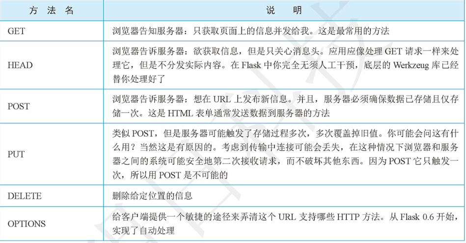

Contents
22.2.2. 路由¶
新增一个路由¶
- 访问http://127.0.0.1:5000/hujianli时触发index方法，方法名称可以自定义
#!/usr/bin/env python
#-*- coding:utf8 -*-
# auther; 18793
# Date：2019/4/19 12:41
# filename: helloword.py
from flask import Flask
app = Flask(__name__)
@app.route("/")
def hello():
return "Hello World!你好啊，小健"
@app.route("/hujianli")
def index():
return "This is index! ......"
if __name__ == '__main__':
app.debug = True
app.run()
eg
#!/usr/bin/env python
#-*- coding:utf8 -*-
# auther; 18793
# Date：2019/4/19 12:41
# filename: helloword.py
from flask import Flask
app = Flask(__name__)
@app.route("/")
def hello():
return "Hello World!你好啊，小健"
@app.route("/hujianli")
def index():
return "This is index! ......"
# 匹配任意的数据类型，http://127.0.0.1:5000/user/XXX
@app.route("/user/<username>")
def user_login(username):
return "Hello {}".format(username)
#只匹配整数型 http://127.0.0.1:5000/post/123，输入字符串会报错
@app.route("/post/<int:post_id>")
def show_post(post_id):
return "Post:{}".format(post_id)
if __name__ == '__main__':
app.debug = True
app.run()
eg
# 获取url信息，通过url_for函数,http://127.0.0.1:5000/url 输出/post/3
@app.route("/url")
def get_url():
return url_for("show_post", post_id=3)
Http方法¶

# Http请求
@app.route("/login",methods=['POST','GET','PUT'])
def login():
if request.method == "GET":
return "这是get请求"
elif request.method == "POST":
pass
else:
pass
- POST和GET请求判断
#!/usr/bin/env python
#-*- coding:utf8 -*-
# auther; 18793
# Date：2019/6/25 16:58
# filename: day3_flask.py
import flask
html_txt = """
<!DOCTYPE html>
<html lang="en">
<head>
<meta charset="UTF-8">
<title>Title</title>
<body>
<h2> 收到GET请求 </h2>
<form method='post'>
<input type="submit" value="发送POST请求" />
</form>
</head>
</body>
</html>
"""
app = flask.Flask(__name__) #实例化主类Flask
@app.route("/route",methods=["GET", "POST"])
def hello(): #定义业务函数
if flask.request.method == "GET": # 判断收到的请求是否为GET
return html_txt
else:
return "收到POST请求，我是Flask"
if __name__ == '__main__':
app.run(debug=True)
使用cookie跟踪用户的实例：¶
#!/usr/bin/env python
# -*- coding:utf8 -*-
# auther; 18793
# Date：2019/6/25 17:23
# filename: day5_flask.py
import flask
html_txt = """
<!DOCTYPE html>
<html lang="en">
<head>
<meta charset="UTF-8">
<title>Title</title>
</head>
<body>
<h2> 收到GET 请求</h2>
<a href="/get_info"> 获取cookie信息 </a>
</body>
</html>
"""
app = flask.Flask(__name__)
@app.route("/set_info/<name>")
def set_cks(name):
name = name if name else 'anonymous'
resp = flask.make_response(html_txt)
resp.set_cookie("name", name)
return resp
@app.route("/get_info")
def get_cks():
name = flask.request.cookies.get("name") # 获取cookie信息
return "获取的cookie信息是：" + name
if __name__ == '__main__':
app.run(debug=True)
使用session跟踪用户的实例：¶
#!/usr/bin/env python
# -*- coding:utf8 -*-
# auther; 18793
# Date：2019/6/25 17:23
# filename: day5_flask.py
import flask
html_txt = """
<!DOCTYPE html>
<html lang="en">
<head>
<meta charset="UTF-8">
<title>Title</title>
</head>
<body>
<h2> 收到GET 请求</h2>
<a href="/get_info"> 获取cookie信息 </a>
</body>
</html>
"""
app = flask.Flask(__name__)
@app.route("/set_info/<name>")
def set_cks(name):
name = name if name else 'anonymous'
flask.session["name"] = name
return html_txt
@app.route("/get_info")
def get_cks():
name = "name" in flask.session and flask.session['name'] #获取session
if name:
return "获取的回话信息是：" + name
else:
return "没有相应回话信息"
if __name__ == '__main__':
app.secret_key = 'sdadajasgfajsgasjgdajgasgasahsuq$$#$%^'
app.run(debug=True)